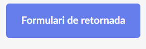
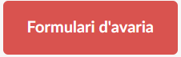

Índex
Introducció al sistema
Benvingut al Sistema de Gestió d'Equips TIC d'ElectroTech! Aquest sistema ha estat dissenyat per facilitar la sol·licitud, seguiment i retorn dels equips informàtics dins l'empresa.
Qui pot utilitzar aquest sistema? Tots els empleats d'ElectroTech que necessitin equips TIC per a les seves tasques diàries poden accedir-hi i gestionar les seves sol·licituds de manera fàcil i segura.
Funcionalitats principals:
- Sol·licitud d'equips amb aprovació automàtica.
- Retorn i seguiment de l'estat dels equips.
- Report de problemes i avaries amb notificació al departament IT.
- Visualització de FAQs per resoldre dubtes comuns.
El sistema està pensat per ser ràpid, intuïtiu i accessible tant des d'ordinador com des de dispositius mòbils.
Préstecs
Com sol·licitar un equip
- Omple el formulari de sol·licitud
- Espera l'aprovació automàtica del sistema
- Recull l'equip assignat al magatzem
- Retorna'l abans de la data límit

Retornades
Com retornar un equip
- Omple el formulari de retornada 
- Indica l'estat de l'equip honestament
- Lliura l'equip al magatzem
Avaries
Com reportar un problema
- Identifica el codi de l'equip (etiqueta adhesiva) 
- Omple el formulari descrivint el problema
- El departament IT revisarà el cas
- Rebràs informació sobre la reparació
Preguntes Freqüents
Quants equips puc tenir simultàniament?
Màxim 2 equips en préstec simultàniament.
Què faig si necessito més temps?
Contacta amb david.martin@electrotech.cat per sol·licitar extensió.
Com sé si un equip està disponible?
El sistema valida automàticament la disponibilitat quan sol·licites.
Què passa si retorno un equip avariat?
Indica l'estat real al formulari. No hi ha penalització per danys normals d'ús.
Contacte
Responsable IT: David Martín
Email: david.martin@electrotech.cat
Telèfon intern: Ext. 301